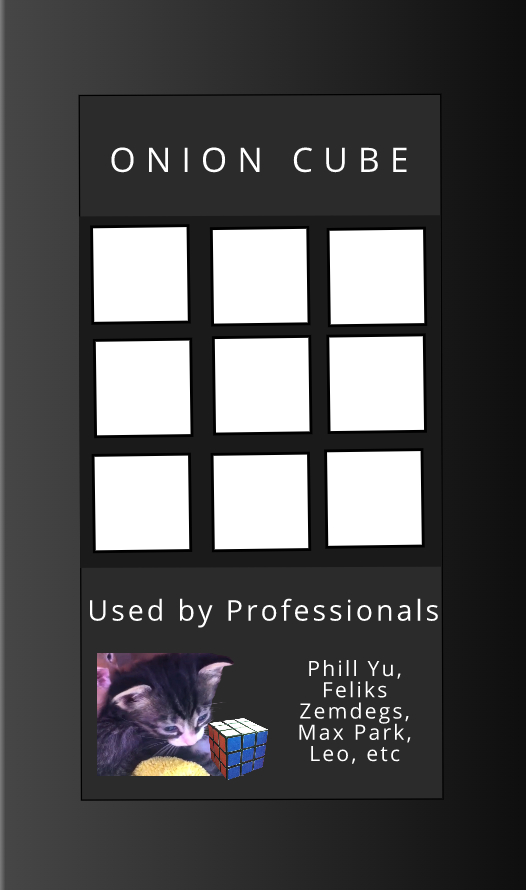
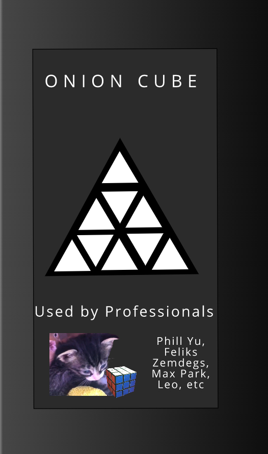

Onion Cubes
speedcubers use it!
a new 4x4New Releases
Onion Cube 3x3
the new onion 3x3 is making speedcubing much easier with tensions up to 2!,
the corner cutting is 45 degrees which is the best with 30 degrees reverse,
and it turns 180 degrees no problem, the best is it comes with a instruction
manual for beginners which is the f2l cases and cfop method of rubiks cube
all pros use it including yusheng du which quit moyu and is now using this.

Onion Pyraminx 3x3
